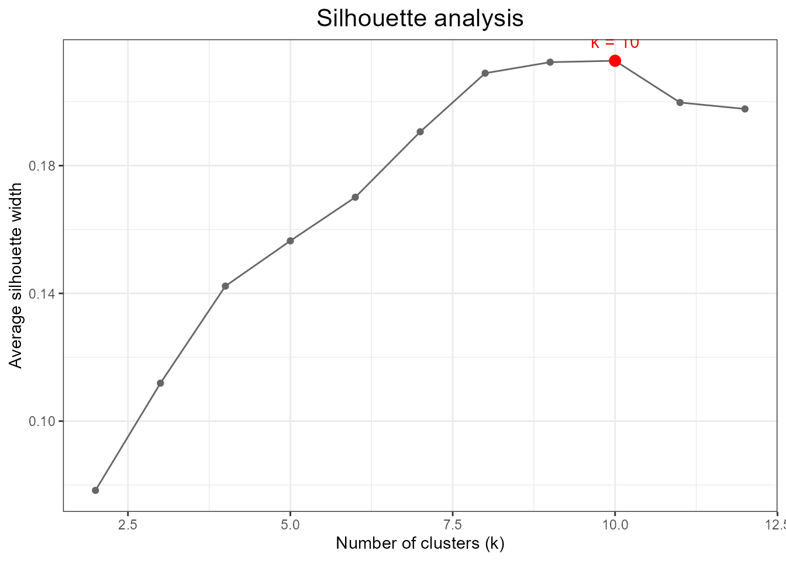
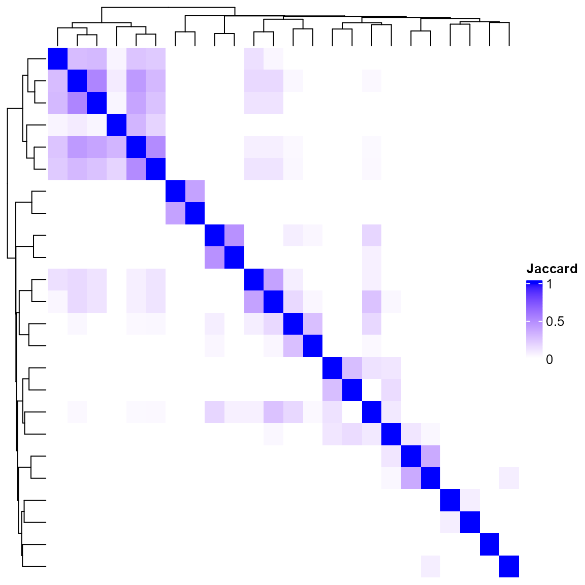
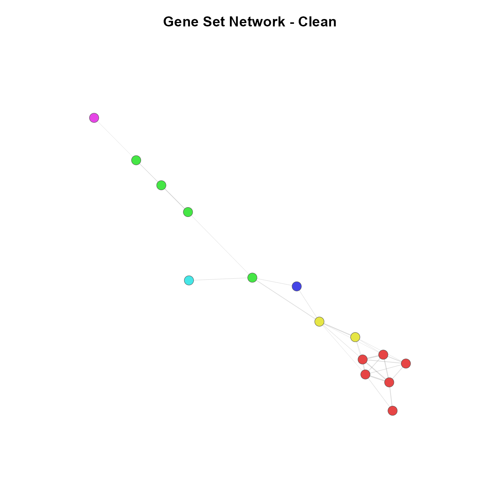
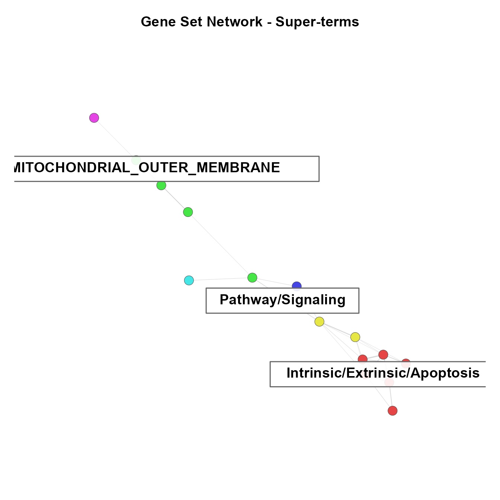
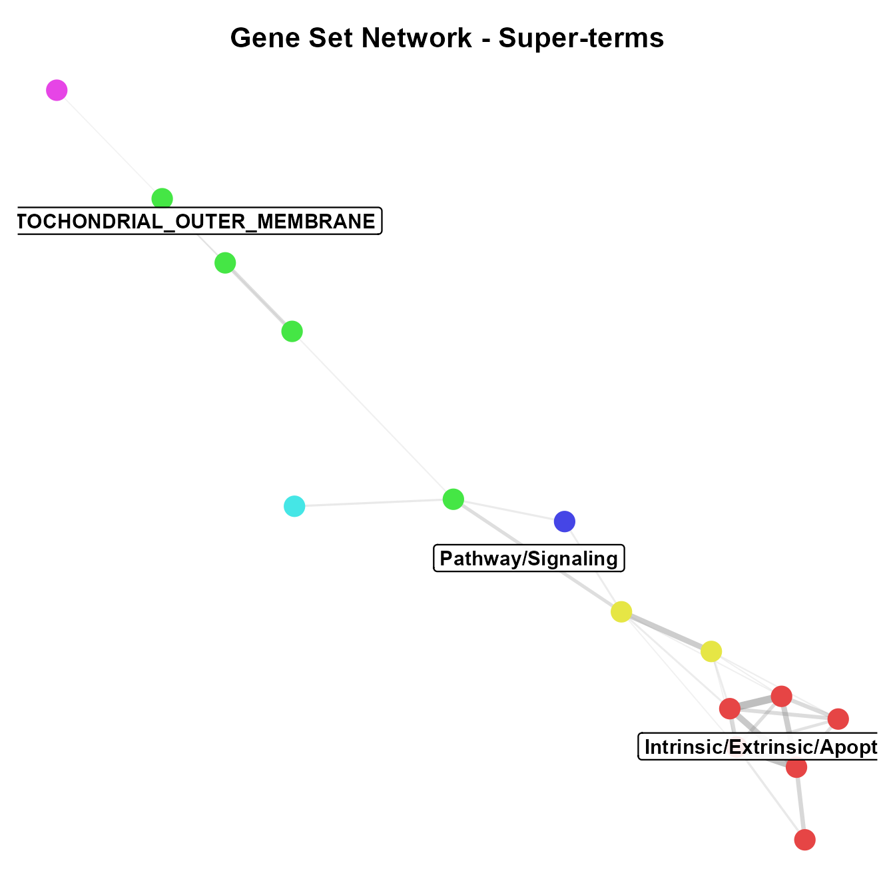
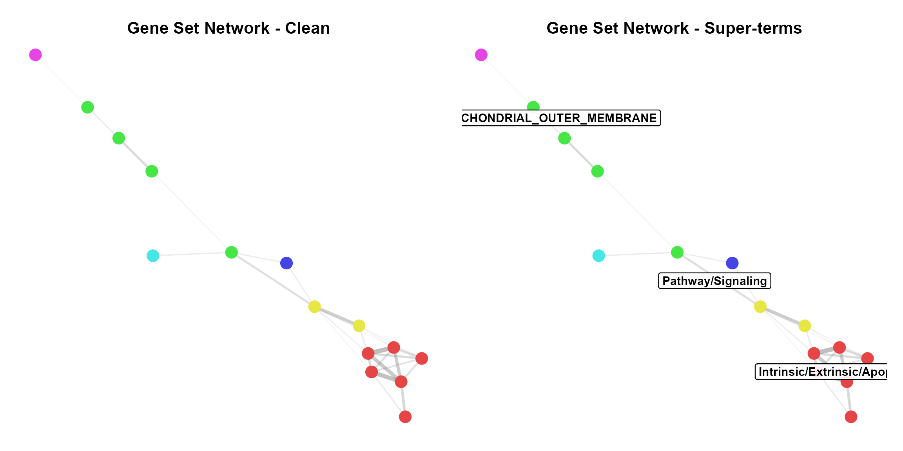

Pathway Analysis Clustering with OmicsKit
PA_clustering.RmdOverview
After a gene set enrichment analysis (e.g., CAMERA, GSEA, fgsea), a common challenge is that hundreds of significant gene sets are returned — many of which are redundant because they share large overlapping gene memberships. This vignette demonstrates how to use OmicsKit’s pathway clustering functions to:
-
Load gene sets from GMT files with
list_gmts() -
Quantify redundancy between gene sets using Jaccard
similarity with
geneset_similarity() -
Cluster redundant gene sets hierarchically with
do_clust() -
Detect communities in the gene set network and
generate interpretable labels with
get_network_communities() -
Visualize the network with
network_clust()(base R) ornetwork_clust_gg()(ggplot2)
Required packages
library(OmicsKit)
# Suggested packages used in this vignette
library(igraph)
library(ComplexHeatmap)Step 1 — Load gene sets
In a real analysis, gene sets are stored as .gmt files.
list_gmts() reads all .gmt files in a
directory and returns a single named list.
geneset_list <- list_gmts("path/to/your/gmt_folder/")For this vignette we use the built-in example data, which contains 40 curated gene sets spanning four biological themes: apoptosis, cell cycle, immune response, and metabolism.
data(geneset_list)
data(camera_results)
# How many gene sets?
length(geneset_list)
#> [1] 40
# What does the enrichment results table look like?
head(camera_results)
#> GeneSet Direction PValue FDR
#> 1 KEGG_APOPTOSIS Up 0.017401305 0.04321579
#> 2 HALLMARK_APOPTOSIS Up 0.012585092 0.04321579
#> 3 GO_INTRINSIC_APOPTOSIS Down 0.010449980 0.04321579
#> 4 GO_EXTRINSIC_APOPTOSIS Up 0.007223143 0.04321579
#> 5 HALLMARK_P53_PATHWAY Up 0.016167120 0.04321579
#> 6 KEGG_P53_SIGNALING Up 0.006856107 0.04321579
# How many are significant at FDR < 0.05?
sum(camera_results$FDR < 0.05)
#> [1] 24Step 2 — Jaccard similarity matrix
geneset_similarity() filters the gene sets by FDR
threshold and computes all pairwise Jaccard similarity coefficients:
A value of 1 means the two gene sets share identical gene membership; 0 means no overlap at all.
jac <- geneset_similarity(
geneset_list = geneset_list,
results = camera_results,
fdr_th = 0.05
)
# The JaccardResult object contains three slots
names(jac)
#> [1] "jaccard_sim" "dist_mat" "geneset_list"
# Dimensions of the similarity matrix
dim(jac$jaccard_sim)
#> [1] 24 24The $dist_mat slot (1 − Jaccard similarity) can be
reused independently — for example as input to nice_UMAP()
or any other distance-based method.
# Preview the top-left corner of the similarity matrix
jac$jaccard_sim[1:5, 1:5]
#> KEGG_APOPTOSIS HALLMARK_APOPTOSIS GO_INTRINSIC_APOPTOSIS
#> KEGG_APOPTOSIS 1.00000000 0.43478261 0.39130435
#> HALLMARK_APOPTOSIS 0.43478261 1.00000000 0.52631579
#> GO_INTRINSIC_APOPTOSIS 0.39130435 0.52631579 1.00000000
#> GO_EXTRINSIC_APOPTOSIS 0.31818182 0.08333333 0.04166667
#> HALLMARK_P53_PATHWAY 0.06666667 0.16000000 0.12000000
#> GO_EXTRINSIC_APOPTOSIS HALLMARK_P53_PATHWAY
#> KEGG_APOPTOSIS 0.31818182 0.06666667
#> HALLMARK_APOPTOSIS 0.08333333 0.16000000
#> GO_INTRINSIC_APOPTOSIS 0.04166667 0.12000000
#> GO_EXTRINSIC_APOPTOSIS 1.00000000 0.00000000
#> HALLMARK_P53_PATHWAY 0.00000000 1.00000000Step 3 — Hierarchical clustering
do_clust() performs Ward-D2 hierarchical clustering on
the distance matrix and automatically selects the optimal number of
clusters k by maximizing the average silhouette width.
clust <- do_clust(jac)
# Optimal k selected automatically
clust$optimal_k
#> [1] 10
# Cluster assignments (one row per gene set)
head(clust$cluster_assignments)
#> # A tibble: 6 × 2
#> NAME cluster
#> <chr> <int>
#> 1 KEGG_APOPTOSIS 1
#> 2 HALLMARK_APOPTOSIS 1
#> 3 GO_INTRINSIC_APOPTOSIS 1
#> 4 GO_EXTRINSIC_APOPTOSIS 1
#> 5 HALLMARK_P53_PATHWAY 2
#> 6 KEGG_P53_SIGNALING 2Silhouette curve
The red dot marks the selected k:
clust$silhouette_plot
Average silhouette width vs. number of clusters. The optimal k is highlighted in red.
Jaccard heatmap with dendrogram
Gene sets in the same hierarchical cluster appear as blocks of high similarity (darker blue) along the diagonal:
ComplexHeatmap::draw(clust$heatmap)
Jaccard similarity heatmap with Ward-D2 dendrogram.
Step 4 — Community detection and super-terms
Hierarchical clustering groups gene sets by overall similarity, but the network community detection captures a different structure: densely connected sub-networks within the Jaccard graph.
get_network_communities() does three things in a single
call:
- Builds a binary adjacency matrix (edges where Jaccard >
threshold) - Runs the Louvain algorithm to detect communities
- Calls
get_superterm()internally to generate TF-IDF labels for each community
net <- get_network_communities(
x = jac,
threshold = 0.3,
method = "louvain",
superterms = TRUE,
n_terms = 3,
remove_prefix = TRUE,
seed = 1905
)
# How many communities were detected?
length(unique(net$membership))
#> [1] 16
# Community summary: label + size
net$superterms$summary
#> # A tibble: 16 × 3
#> community superterm n_genesets
#> <int> <chr> <int>
#> 1 1 Intrinsic/Extrinsic/Apoptosis 5
#> 2 2 Pathway/Signaling 2
#> 3 6 Checkpoint/Cell/Cycle 2
#> 4 14 Glycolysis/Gluconeogenesis 2
#> 5 16 Metabolism/Beta/Oxidation 2
#> 6 3 MITOCHONDRIAL_OUTER_MEMBRANE 1
#> 7 4 CELL_CYCLE 1
#> 8 5 E2F_TARGETS 1
#> 9 7 DNA_DAMAGE_RESPONSE 1
#> 10 8 DNA_REPLICATION 1
#> 11 9 MYC_TARGETS_V1 1
#> 12 10 HOMOLOGOUS_RECOMBINATION 1
#> 13 11 NF_KAPPA_B 1
#> 14 12 INTERFERON_GAMMA_RESPONSE 1
#> 15 13 INTERFERON_ALPHA_RESPONSE 1
#> 16 15 CITRATE_CYCLE_TCA 1The $superterms$mapping tibble links every gene set to
its community and its super-term label:
head(net$superterms$mapping)
#> # A tibble: 6 × 3
#> geneset community superterm
#> <chr> <int> <chr>
#> 1 GO_EXTRINSIC_APOPTOSIS 1 Intrinsic/Extrinsic/Apoptosis
#> 2 GO_INTRINSIC_APOPTOSIS 1 Intrinsic/Extrinsic/Apoptosis
#> 3 GO_REGULATION_OF_APOPTOSIS 1 Intrinsic/Extrinsic/Apoptosis
#> 4 HALLMARK_APOPTOSIS 1 Intrinsic/Extrinsic/Apoptosis
#> 5 KEGG_APOPTOSIS 1 Intrinsic/Extrinsic/Apoptosis
#> 6 HALLMARK_P53_PATHWAY 2 Pathway/SignalingStep 5 — Network visualization
Option A: base R igraph (network_clust)
network_clust() draws plots directly to the active
graphics device and returns node attributes invisibly. It is faster and
requires only igraph.
result <- network_clust(
x = jac,
clust_result = clust,
jaccard_threshold = 0.10,
min_degree = 1,
superterms = TRUE,
superterm_data = net$superterms,
type = "clean",
seed = 1905
)
Gene set network — clean view. Node color reflects hierarchical cluster.
network_clust(
x = jac,
clust_result = clust,
jaccard_threshold = 0.10,
min_degree = 1,
superterms = TRUE,
superterm_data = net$superterms,
type = "superterms",
seed = 1905
)
Gene set network with community super-term labels.
Option B: ggraph / ggplot2 (network_clust_gg)
network_clust_gg() returns a named list of ggplot2
objects that can be further customized, saved with
ggsave(), or composed with patchwork. Requires
ggraph and tidygraph.
plots <- network_clust_gg(
x = jac,
clust_result = clust,
jaccard_threshold = 0.10,
min_degree = 1,
superterms = TRUE,
superterm_data = net$superterms,
type = "all",
seed = 1905
)
# Display the combined view (super-terms + individual node labels)
plots$superterms
Gene set network (ggraph) with super-term labels.

Side-by-side comparison: clean view (left) vs. super-term labels (right).
Saving plots
# Save with ggsave
ggplot2::ggsave(
filename = "network_combined.pdf",
plot = plots$combined,
width = 14,
height = 14
)
# Save base R igraph plot to PDF
pdf("network_superterms_igraph.pdf", width = 14, height = 14)
network_clust(jac, clust,
superterms = TRUE,
superterm_data = net$superterms,
type = "superterms")
dev.off()Step 6 — Downstream tables
Both network functions return node-level attributes for downstream analysis:
# From the igraph version (invisible return)
head(result$node_attributes)
#> # A tibble: 6 × 7
#> NAME cluster community degree betweenness closeness superterm
#> <chr> <int> <int> <dbl> <dbl> <dbl> <chr>
#> 1 KEGG_APOPTOSIS 1 1 5 0 0.107 Intrinsi…
#> 2 HALLMARK_APOPTOSIS 1 1 6 0 0.163 Intrinsi…
#> 3 GO_INTRINSIC_APOPTOS… 1 1 6 8 0.178 Intrinsi…
#> 4 GO_EXTRINSIC_APOPTOS… 1 1 2 0 0.135 Intrinsi…
#> 5 HALLMARK_P53_PATHWAY 2 2 5 3.5 0.166 Pathway/…
#> 6 KEGG_P53_SIGNALING 2 2 6 51.5 0.211 Pathway/…
# Superterm report: community membership breakdown
result$superterm_report
#> # A tibble: 16 × 4
#> community superterm n_genesets geneset_members
#> <int> <chr> <int> <chr>
#> 1 1 Intrinsic/Extrinsic/Apoptosis 5 GO_EXTRINSIC_APOPTOSIS | …
#> 2 2 Pathway/Signaling 2 HALLMARK_P53_PATHWAY | KE…
#> 3 6 Checkpoint/Cell/Cycle 2 GO_MITOTIC_CELL_CYCLE | H…
#> 4 14 Glycolysis/Gluconeogenesis 2 GO_GLUCONEOGENESIS | KEGG…
#> 5 16 Metabolism/Beta/Oxidation 2 GO_FATTY_ACID_BETA_OXIDAT…
#> 6 3 MITOCHONDRIAL_OUTER_MEMBRANE 1 GO_MITOCHONDRIAL_OUTER_ME…
#> 7 4 CELL_CYCLE 1 KEGG_CELL_CYCLE
#> 8 5 E2F_TARGETS 1 HALLMARK_E2F_TARGETS
#> 9 7 DNA_DAMAGE_RESPONSE 1 GO_DNA_DAMAGE_RESPONSE
#> 10 8 DNA_REPLICATION 1 KEGG_DNA_REPLICATION
#> 11 9 MYC_TARGETS_V1 1 HALLMARK_MYC_TARGETS_V1
#> 12 10 HOMOLOGOUS_RECOMBINATION 1 KEGG_HOMOLOGOUS_RECOMBINA…
#> 13 11 NF_KAPPA_B 1 KEGG_NF_KAPPA_B_SIGNALING
#> 14 12 INTERFERON_GAMMA_RESPONSE 1 HALLMARK_INTERFERON_GAMMA…
#> 15 13 INTERFERON_ALPHA_RESPONSE 1 HALLMARK_INTERFERON_ALPHA…
#> 16 15 CITRATE_CYCLE_TCA 1 KEGG_CITRATE_CYCLE_TCAFull workflow — summary
library(OmicsKit)
# 1. Load gene sets
gsl <- list_gmts("path/to/gmt_folder/")
# 2. Jaccard similarity (filter by FDR < 0.05)
jac <- geneset_similarity(gsl, camera_results, fdr_th = 0.05)
# 3. Hierarchical clustering
clust <- do_clust(jac)
clust$silhouette_plot
ComplexHeatmap::draw(clust$heatmap)
# 4. Community detection + super-terms
net <- get_network_communities(jac, threshold = 0.3)
net$superterms$summary
# 5a. Network plot — base R (draws to device)
network_clust(jac, clust,
superterms = TRUE,
superterm_data = net$superterms)
# 5b. Network plot — ggplot2 (returns objects)
plots <- network_clust_gg(jac, clust,
superterms = TRUE,
superterm_data = net$superterms)
plots$combined
ggplot2::ggsave("network.pdf", plots$combined, width = 14, height = 14)
# 6. Reuse the distance matrix for UMAP
nice_UMAP(as.matrix(jac$dist_mat))Session info
sessionInfo()
#> R version 4.4.2 (2024-10-31 ucrt)
#> Platform: x86_64-w64-mingw32/x64
#> Running under: Windows 11 x64 (build 26200)
#>
#> Matrix products: default
#>
#>
#> locale:
#> [1] LC_COLLATE=English_United States.utf8
#> [2] LC_CTYPE=English_United States.utf8
#> [3] LC_MONETARY=English_United States.utf8
#> [4] LC_NUMERIC=C
#> [5] LC_TIME=English_United States.utf8
#>
#> time zone: America/Bogota
#> tzcode source: internal
#>
#> attached base packages:
#> [1] grid stats graphics grDevices utils datasets methods
#> [8] base
#>
#> other attached packages:
#> [1] patchwork_1.3.2 ComplexHeatmap_2.22.0 igraph_2.2.2
#> [4] OmicsKit_1.0.0.0000
#>
#> loaded via a namespace (and not attached):
#> [1] gtable_0.3.6 circlize_0.4.17 shape_1.4.6.1
#> [4] rjson_0.2.23 xfun_0.54 bslib_0.10.0
#> [7] ggplot2_4.0.2 htmlwidgets_1.6.4 GlobalOptions_0.1.3
#> [10] ggrepel_0.9.6 vctrs_0.7.1 tools_4.4.2
#> [13] generics_0.1.4 stats4_4.4.2 parallel_4.4.2
#> [16] tibble_3.3.1 cluster_2.1.8.2 pkgconfig_2.0.3
#> [19] RColorBrewer_1.1-3 S7_0.2.1 desc_1.4.3
#> [22] S4Vectors_0.44.0 lifecycle_1.0.5 compiler_4.4.2
#> [25] farver_2.1.2 textshaping_1.0.5 ggforce_0.5.0
#> [28] graphlayouts_1.2.3 codetools_0.2-20 clue_0.3-67
#> [31] htmltools_0.5.9 sass_0.4.10 yaml_2.3.12
#> [34] tidyr_1.3.2 pillar_1.11.1 pkgdown_2.2.0
#> [37] crayon_1.5.3 jquerylib_0.1.4 MASS_7.3-61
#> [40] cachem_1.1.0 viridis_0.6.5 magick_2.9.1
#> [43] iterators_1.0.14 foreach_1.5.2 tidyselect_1.2.1
#> [46] digest_0.6.39 slam_0.1-55 purrr_1.2.1
#> [49] dplyr_1.2.0 labeling_0.4.3 polyclip_1.10-7
#> [52] fastmap_1.2.0 colorspace_2.1-2 cli_3.6.5
#> [55] magrittr_2.0.4 tidygraph_1.3.1 ggraph_2.2.2
#> [58] utf8_1.2.6 withr_3.0.2 scales_1.4.0
#> [61] rmarkdown_2.30 matrixStats_1.5.0 otel_0.2.0
#> [64] gridExtra_2.3 ragg_1.5.1 png_0.1-8
#> [67] GetoptLong_1.1.0 NLP_0.3-2 memoise_2.0.1
#> [70] evaluate_1.0.5 knitr_1.51 IRanges_2.40.1
#> [73] doParallel_1.0.17 viridisLite_0.4.3 tm_0.7-18
#> [76] rlang_1.1.7 Rcpp_1.1.1 glue_1.8.0
#> [79] tweenr_2.0.3 xml2_1.5.2 BiocGenerics_0.52.0
#> [82] rstudioapi_0.18.0 jsonlite_2.0.0 R6_2.6.1
#> [85] systemfonts_1.3.2 fs_1.6.7